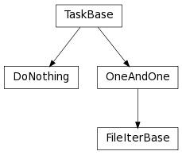

tlpipe.pipeline.pipeline¶
Data Analysis and Simulation Pipeline.
A data analysis pipeline is completely specified by a pipe file that specifies both what tasks are to be run and the parameters that go to those tasks. Included in this package are base classes for simplifying the construction of data analysis tasks, as well as the pipeline manager which executes them.
Examples
Basic Tasks¶
A pipeline task is a subclass of TaskBase intended to perform some small,
modular piece analysis. The developer of the task must specify what input
parameters the task expects as well as code to perform the actual processing
for the task.
Input parameters are specified by adding class attributes params_init which is a dictionary whose entries are key and default value pairs. For instance a task definition might begin with
>>> class SpamTask(TaskBase):
... params_init = {
... 'eggs': [],
... }
...
... prefix = 'st_'
This defines a new task named SpamTask with a parameter named eggs,
whose default value is an empty list. The default values in class attribute
SpamTask.params_init will be updated by reading parameters with the
specified prefix in the pipe file, then the updated parameter dictionary will be
used as the input parameters for this task.
The actual work for the task is specified by over-ridding any of the
setup(), next() or
finish() methods (__init__() may also be
implemented`). These are executed in order, with next()
possibly being executed many times. Iteration of next() is halted by
raising a PipelineStopIteration. Here is a example of a somewhat
trivial but fully implemented task:
>>> class PrintEggs(TaskBase):
...
... params_init = {
... 'eggs': [],
... }
...
... prefix = 'pe_'
...
... def __init__(self, parameter_file_or_dict=None, feedback=2):
...
... # Read in the parameters.
... super(self.__class__, self).__init__(parameter_file_or_dict, feedback)
...
... self.i = 0
...
... def setup(self):
... print "Setting up PrintEggs."
...
... def next(self):
... if self.i >= len(self.params['eggs']):
... raise PipelineStopIteration()
... print "Spam and %s eggs." % self.params['eggs'][self.i]
... self.i += 1
...
... def finish(self):
... print "Finished PrintEggs."
Any return value of these three pipeline methods can be handled by the pipeline
and provided to subsequent tasks. The methods setup() and next()
may accept (positional only) arguments which will be received as the outputs of
early tasks in a pipeline chain. The following is an example of a pair of tasks
that are designed to operate in this manner.
>>> class GetEggs(TaskBase):
...
... params_init = {
... 'eggs': [],
... }
...
... prefix = 'ge_'
...
... def __init__(self, parameter_file_or_dict=None, feedback=2):
...
... # Read in the parameters.
... super(self.__class__, self).__init__(parameter_file_or_dict, feedback)
...
... self.i = 0
... self.eggs = self.params['eggs']
...
... def setup(self):
... print "Setting up GetEggs."
...
... def next(self):
... if self.i >= len(self.eggs):
... raise PipelineStopIteration()
... egg = self.eggs[self.i]
... self.i += 1
... return egg
...
... def finish(self):
... print "Finished GetEggs."
>>> class CookEggs(TaskBase):
...
... params_init = {
... 'style': 'fried',
... }
...
... prefix = 'ce_'
...
... def setup(self):
... print "Setting up CookEggs."
...
... def next(self, egg):
... print "Cooking %s %s eggs." % (self.params['style'], egg)
...
... def finish(self):
... print "Finished CookEggs."
Note that CookEggs.next() never raises a PipelineStopIteration.
This is because there is no way for the task to internally know how long to
iterate. next() will continue to be called as long as there are inputs
for next() and will stop iterating when there are none.
Pipeline Configuration¶
To actually run a task or series of tasks, a pipe pipeline configuration file (actually is a python script) is required. The pipeline configuration has two main functions: to specify the the pipeline (which tasks are run, in which order and how to handle the inputs and outputs of tasks) and to provide parameters to each individual task. Here is an example of a pipeline configuration:
>>> spam_pipe = '''
... pipe_tasks = []
...
... pipe_tasks.append(PrintEggs)
... ### parameters for PrintEggs
... pe_eggs = ['green', 'duck', 'ostrich']
...
... pipe_tasks.append(GetEggs)
... ### parameters for GetEggs
... ge_eggs = pe_eggs
... ge_out = 'egg'
...
... pipe_tasks.append(CookEggs)
... ### parameters for CookEggs
... ce_style = 'fried'
... ce_in = ge_out
... '''
Here the pipe_tasks is a list to hold a list of tasks to be executed. Other parameters with the specified prefix are the input parameters for the corresponding tasks, they include three keys that all taks will have:
- out
- A ‘pipeline product key’ or list of keys that label any return values from
setup(),next()orfinish(). - requires
- A ‘pipeline product key’ or list of keys representing values to be passed
as arguments to
setup(). - in
- A ‘pipeline product key’ or list of keys representing values to be passed
as arguments to
next().
Execution Order¶
When the above pipeline is executed it produces the following output.
>>> exec(spam_pipe)
>>> Manager(globals()).run()
Reading parameters from dictionary.
Parameters set.
parameter: logging defaulted to value: info
parameter: outdir defaulted to value: output/
Reading parameters from dictionary.
Parameters set.
parameter: out defaulted to value: None
parameter: requires defaulted to value: None
parameter: in defaulted to value: None
Reading parameters from dictionary.
Warning: Assigned an input parameter to the value of the wrong type. Parameter name: out
Parameters set.
parameter: requires defaulted to value: None
parameter: in defaulted to value: None
Reading parameters from dictionary.
Warning: Assigned an input parameter to the value of the wrong type. Parameter name: in
Parameters set.
parameter: out defaulted to value: None
parameter: requires defaulted to value: None
Setting up PrintEggs.
Setting up GetEggs.
Setting up CookEggs.
Spam and green eggs.
Cooking fried green eggs.
Spam and duck eggs.
Cooking fried duck eggs.
Spam and ostrich eggs.
Cooking fried ostrich eggs.
Finished PrintEggs.
Finished GetEggs.
Finished CookEggs.
==========================================
= =
= DONE FOR THE PIPELINE!! =
= CONGRATULATIONS!! =
= =
==========================================
The rules for execution order are as follows:
- One of the methods
setup(),next()orfinish(), as appropriate, will be executed from each task, in order. - If the task method is missing its input, as specified by the ‘requires’ or ‘in’ keys, restart at the beginning of the tasks list.
- If the input to
next()is missing and the task is at the beginning of the list there will be no opportunity to generate this input. Stop iteratingnext()and proceed tofinish(). - Once a task has executed
finish(), remove it from the list. - Once a method from the last member of the tasks list is executed, restart at the beginning of the list.
If the above rules seem somewhat opaque, consider the following example which illustrates these rules in a pipeline with a slightly more non-trivial flow.
>>> class DoNothing(TaskBase):
...
... prefix = 'dn_'
...
... def setup(self):
... print "Setting up DoNothing."
...
... def next(self, input):
... print "DoNothing next."
...
... def finish(self):
... print "Finished DoNothing."
>>> new_spam_pipe = '''
... pipe_tasks = []
...
... pipe_tasks.append(GetEggs)
... ### parameters for GetEggs
... ge_eggs = pe_eggs
... ge_out = 'egg'
...
... pipe_tasks.append(CookEggs)
... ### parameters for CookEggs
... ce_style = 'fried'
... ce_in = ge_out
...
... pipe_tasks.append(DoNothing)
... ### parameters for DoNothing
... dn_in = 'non_existent_data_product'
...
... pipe_tasks.append(PrintEggs)
... ### parameters for PrintEggs
... pe_eggs = ['green', 'duck', 'ostrich']
... '''
>>> exec(new_spam_pipe)
>>> Manager(globals()).run()
Reading parameters from dictionary.
Parameters set.
parameter: logging defaulted to value: info
parameter: outdir defaulted to value: output/
Reading parameters from dictionary.
Warning: Assigned an input parameter to the value of the wrong type. Parameter name: out
Parameters set.
parameter: requires defaulted to value: None
parameter: in defaulted to value: None
Reading parameters from dictionary.
Warning: Assigned an input parameter to the value of the wrong type. Parameter name: in
Parameters set.
parameter: out defaulted to value: None
parameter: requires defaulted to value: None
Reading parameters from dictionary.
Warning: Assigned an input parameter to the value of the wrong type. Parameter name: in
Parameters set.
parameter: out defaulted to value: None
parameter: requires defaulted to value: None
Reading parameters from dictionary.
Parameters set.
parameter: out defaulted to value: None
parameter: requires defaulted to value: None
parameter: in defaulted to value: None
Setting up GetEggs.
Setting up CookEggs.
Setting up DoNothing.
Setting up PrintEggs.
Cooking fried green eggs.
Cooking fried duck eggs.
Cooking fried ostrich eggs.
Finished GetEggs.
Finished CookEggs.
Finished DoNothing.
Spam and green eggs.
Spam and duck eggs.
Spam and ostrich eggs.
Finished PrintEggs.
==========================================
= =
= DONE FOR THE PIPELINE!! =
= CONGRATULATIONS!! =
= =
==========================================
Notice that DoNothing.next() is never called, since the pipeline never
generates its input, ‘non_existent_data_product’. Once everything before
DoNothing has been executed the pipeline notices that there is no
opertunity for ‘non_existent_data_product’ to be generated and forces
DoNothing to proceed to finish(). This also unblocks PrintEggs
allowing it to proceed normally.
Advanced Tasks¶
Several subclasses of TaskBase provide advanced functionality for tasks
that conform to the most common patterns. This functionality includes: optionally
reading inputs from disk, instead of receiving them from the pipeline;
optionally writing outputs to disk automatically; and caching the results of a
large computation to disk in an intelligent manner (not yet implemented).
Base classes providing this functionality are OneAndOne for (at most)
one input and one output. There are limited to a single input (‘in’ key) and
a single output (‘out’ key). Method process() should be
overwritten instead of next(). Optionally,
read_input() and write_output() may be
over-ridden for maximum functionality. setup() and
finish() may be overridden as usual. FileIterBase
for iterating tasks over input files.
Inheritance diagram¶
See the documentation for these base classes for more details.
Functions
format_list(val) |
Format parameter val to a list. |
input_path(path[, iteration]) |
Normalize the given input path. |
output_path(path[, relative, mkdir, iteration]) |
Normalize the given output path. |
Classes
DoNothing([parameter_file_or_dict, feedback]) |
Do nothing. |
FileIterBase([parameter_file_or_dict, feedback]) |
Base class for iterating tasks over input files. |
Manager([pipefile, feedback]) |
Pipeline manager for setting up and running pipeline tasks. |
OneAndOne([parameter_file_or_dict, feedback]) |
Base class for tasks that have (at most) one input and one output. |
TaskBase([parameter_file_or_dict, feedback]) |
Base class for all pipeline tasks. |
Exceptions
PipelineConfigError |
Raised when there is an error setting up a pipeline. |
PipelineRuntimeError |
Raised when there is a pipeline related error at runtime. |
PipelineStopIteration |
This stops the iteration of next() in pipeline tasks. |